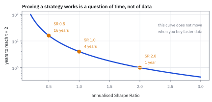
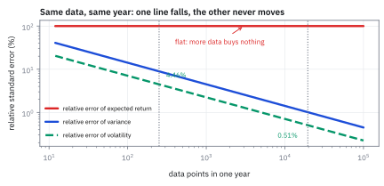
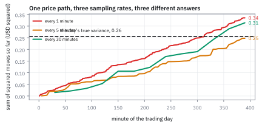

25.4 Realized Volatility from High-Frequency Data
ข้อมูลระหว่างวันทำให้รู้ความผันผวนแม่นขึ้นตามจำนวนจุด แต่ไม่ช่วยให้รู้ผลตอบแทนคาดหวังเลย และถ้าเก็บถี่เกินไป ความคลาดเคลื่อนของราคาจะดันความผันผวนที่วัดได้ให้สูงเกินจริง
หุ้นตัวหนึ่งมี drift ของ log price 8% ต่อปีและความผันผวน 16% ต่อปี มีข้อมูลหนึ่งปี ทีมกำลังจะซื้อข้อมูลราคาทุก 5 นาทีมาแทนราคาปิดรายวัน คนหนึ่งบอกว่า “ข้อมูลมากขึ้น 78 เท่า เราจะรู้ทั้งผลตอบแทนคาดหวังและความผันผวนแม่นขึ้นเกือบ 9 เท่า” ถูกไหม และถ้าซื้อข้อมูลทุก 1 นาทีแทนจะดีกว่าไหม?
ลองตอบก่อนเปิดเฉลย
ถูกครึ่งเดียว ความผันผวนแม่นขึ้น 8.83 เท่า จาก ±0.713 จุดเหลือ ±0.081 จุด แต่ SE ของผลตอบแทนคาดหวังยังเป็น 16 จุดเท่าเดิม t ยังเป็น 0.5 และต้องรอ 16 ปีกว่าจะได้ t เท่ากับ 2 ข้อมูลทุก 1 นาทีแย่กว่า ถ้า spread ของหุ้นคือ 2.4 เซนต์แบบหุ้น \$50 ในหน้าแบบจำลองของ Roll ความผันผวนที่วัดได้จะพองขึ้น 20% ความถี่ที่ความผิดรวมต่ำที่สุดอยู่ราว 4 ถึง 5 นาที
ภาพรวมก่อนลงสูตร
แบบจำลองอย่าง GARCH มองความผันผวนเป็นสถานะที่มองไม่เห็นแล้วเดาจากผลตอบแทนรายวัน อีกทางคือวัดตรง ๆ: ตอนนี้ข้อมูลราคาทุก tick หาได้ทั่วไป ถ้าซอยหนึ่งวันเป็นช่วงสั้น ๆ แล้วรวมกำลังสองของการขยับทุกช่วง จะได้ realized variance ของวันนั้นโดยไม่ต้องมีแบบจำลองเลย คำถามคือข้อมูลถี่ซื้ออะไรได้บ้าง
คำตอบมีสามชั้น ชั้นแรก ผลตอบแทนคาดหวังไม่แม่นขึ้นเลยไม่ว่าจะซอยละเอียดแค่ไหน เพราะผลรวมของการขยับทุกช่วงยุบเหลือราคาปลายลบราคาต้น ชั้นที่สอง variance แม่นขึ้นตามรากที่สองของจำนวนช่วง เพราะทุกช่วงให้ตัวอย่างใหม่ ชั้นที่สาม ราคาที่บันทึกมีความคลาดเคลื่อนแบบที่ แบบจำลองของ Roll อธิบาย ความคลาดเคลื่อนนั้นถูกนับซ้ำทุกช่วง ยิ่งซอยถี่ ยิ่งดัน RV ให้สูงเกินจริง จึงมีความถี่ที่ดีที่สุดอยู่ตรงกลาง
รูปด้านล่างคือชั้นที่สามในภาพเดียว: เส้นสีส้มคือสิ่งที่ RV หนึ่งวันให้โดยเฉลี่ย แถบฟ้าคือการแกว่งของมันจากวันต่อวัน
รูป — RV หนึ่งวันเทียบความถี่ที่เก็บราคา: bias กับความสุ่มดึงกันคนละทาง
ศัพท์ที่ใช้ในหัวข้อนี้
- Realized variance และ realized volatility (RV)
- ผลรวมของผลตอบแทนย่อยกำลังสองในหนึ่งวัน และรากที่สองของมัน ใช้วัดความผันผวนของวันนั้นจากข้อมูลโดยตรง ไม่ต้องใช้แบบจำลองอย่าง GARCH
- Drift
- ส่วนที่คาดไว้ของการขยับของ log price ต่อปี ในหน้านี้คือผลตอบแทนคาดหวังที่อยากรู้ $\mu/\sigma$ คือ Sharpe Ratio ของ log return
- Uncentered estimator
- การคิด variance โดยไม่หักค่าเฉลี่ยออกก่อน ใช้ได้เพราะในช่วงสั้น drift เล็กกว่าการขยับสุ่มมาก และ bias ที่เกิดหดตามจำนวนจุด
- Mean squared error (MSE)
- bias กำลังสองบวก variance ของตัวประมาณ ใช้เป็นคะแนนรวมเวลาเลือกความถี่ที่เก็บราคา
- Autocovariance-corrected RV
- RV ที่บวก $2\sum r_jr_{j-1}$ เข้าไปเพื่อหักความคลาดเคลื่อนของราคาออก อาศัยผลที่ว่า autocovariance ที่ lag 1 ของการขยับคือ $-\sigma_\eta^2$
- Overnight return
- ผลตอบแทนจากราคาปิดถึงราคาเปิดวันถัดไป ข้อมูลระหว่างวันไม่เห็นมัน แต่ผลตอบแทนรายวันแบบปิดถึงปิดรวมมันไว้ และข่าวสำคัญจำนวนมากออกช่วงนี้
สัญลักษณ์และหน่วย
| สัญลักษณ์ | ความหมาย | หน่วย |
|---|---|---|
| $p(t)$ | log ของราคา ณ เวลา $t$ ปี | ไม่มีหน่วย |
| $\mu,\ \sigma$ | drift และความผันผวนของ log price | ต่อปี |
| $n,\ r_j$ | จำนวนช่วงย่อยในหนึ่งปี และผลตอบแทนของช่วงย่อยที่ $j$ | ช่วง, ทศนิยม |
| $\hat\mu,\ \hat\sigma^2$ | ตัวประมาณ drift และ variance | ต่อปี |
| $M,\ q,\ N$ | นาทีซื้อขายต่อวัน 390 (9:30 ถึง 16:00 น.), นาทีต่อช่วง, จำนวนช่วงต่อวัน $M/q$ | นาที, นาที, ช่วง |
| $\sigma_\epsilon,\ \sigma_\eta$ | การขยับจริงต่อนาที และความคลาดเคลื่อนของราคาที่บันทึก | ดอลลาร์ต่อหุ้น |
| $\mathrm{RV}_q$ | realized variance ของหนึ่งวันจากช่วง $q$ นาที | ดอลลาร์² |
ขั้นที่ 1 — แบบจำลองและตัวประมาณสองตัว
นี่คือนิยามของแบบจำลองและของตัวประมาณ log price เดินด้วย drift คงที่บวก Brownian motion แบบที่ geometric Brownian motion ใช้ สังเกตหนึ่งปีโดยซอยเป็น $n$ ช่วงเท่ากัน ผลตอบแทนย่อยแต่ละช่วงจึงเป็น Normal ที่อิสระกัน ค่าเฉลี่ยและ variance แบ่งเท่า ๆ กันตามจำนวนช่วง
ตัวประมาณ variance ไม่ได้หักค่าเฉลี่ยออกก่อน ซึ่งดูผิดหลักสถิติ แต่ในช่วงสั้น drift ต่อช่วง $\mu/n$ เล็กกว่าการขยับสุ่ม $\sigma/\sqrt n$ มาก ค่าเฉลี่ยของ $r^2$ จึงเกือบเท่ากับ variance ขั้นที่ว่าด้วย variance ด้านล่างจะวัดว่า bias ที่เกิดเล็กแค่ไหน ทั้งสองตัวประมาณใช้ข้อมูลชุดเดียวกันทุกจุด
ขั้นที่ 2 — drift: ซอยละเอียดแค่ไหนก็ไม่ช่วย
รวมผลตอบแทนย่อยทั้งหมด ทุกจุดตรงกลางปรากฏสองครั้งด้วยเครื่องหมายตรงข้ามจึงหักกันหมด เหลือแค่ราคาปลายลบราคาต้น ถ้ามีข้อมูล $T$ ปี ตัวประมาณคือการขยับทั้งหมดหารด้วย $T$
ในสูตรไม่มี $n$ เลย จะเก็บราคาทุกวันหรือทุกมิลลิวินาที SE ก็เป็น 16 จุดเท่าเดิม ทางเดียวที่ทำให้ t โตคือเวลา: t โตตาม $\sqrt T$ ต้องใช้ 16 ปีกว่าจะเป็น 2
$\mu/\sigma$ คือ Sharpe Ratio ของ log return กลยุทธ์ที่ Sharpe Ratio 0.5 จึงต้องรัน 16 ปีจึงพิสูจน์ตัวเองที่ t เท่ากับ 2 (เรื่องเดียวกับ การทดสอบ Sharpe Ratio) และข้อมูลที่ละเอียดขึ้นซื้อเวลานั้นไม่ได้
รูป — หนึ่งปีจำลอง: drift เห็นแค่สองจุด variance เห็นทุกก้าว
รูป — ต้องรอกี่ปีกว่าจะรู้ว่ากลยุทธ์ทำเงินได้จริง

ขั้นที่ 3 — variance: ซอยละเอียดช่วยได้จริง
หาค่าเฉลี่ยและ variance ของ $\hat\sigma^2$ ใช้โมเมนต์ของ Normal ที่ค่าเฉลี่ย $a$ variance $b$: กาง $(a+\sqrt b\,z)^4$ แล้วใช้ $\mathbb E[z]=\mathbb E[z^3]=0$, $\mathbb E[z^2]=1$ และ $\mathbb E[z^4]=3$ (ได้จาก moment generating function ของ Normal) ผลตอบแทนย่อยอิสระกัน variance ของผลรวมจึงเป็นผลรวมของ variance
บรรทัดที่สี่คือ $\mathbb E[r^4]-(\mathbb E[r^2])^2$: พจน์ $a^4$ หักกัน และ $6a^2b-2a^2b=4a^2b$ คูณด้วย $n$ ได้สองบรรทัดสุดท้าย bias คือ $\mu^2/n$ ซึ่งหดตามจำนวนจุด ส่วน SE สัมพัทธ์ของ variance คือราว $\sqrt{2/n}$ ตัวประมาณจึงลู่เข้าค่าจริง (consistent) ทั้งที่ไม่ได้หักค่าเฉลี่ย
สองตัวประมาณต่างกันเพราะ drift กับ variance สะสมตามเวลาต่างกัน drift ของหนึ่งปีกระจายอยู่ในการขยับทั้งปี ซอยแล้วไม่ได้เห็นมันเพิ่ม ส่วน variance ปรากฏในทุกช่วงย่อย ยิ่งซอยยิ่งได้ตัวอย่างอิสระมาเฉลี่ยมากขึ้น ถ้าความผันผวนเปลี่ยนช้า ความผันผวนที่วัดแม่นของวันนี้ก็ใช้ทำนายพรุ่งนี้ได้ทันที โดยไม่ต้องมีแบบจำลองอย่าง GARCH
ขั้นที่ 4 — ใส่ตัวเลขของโจทย์
โจทย์ให้อะไรมาบ้าง: $\mu=8\%$, $\sigma=16\%$ ต่อปี ราคาปิดรายวันให้ $n=252$ ราคาทุก 5 นาทีให้ 78 ช่วงต่อวันของ 390 นาที จึงได้ $n=78\times252=19{,}656$ ใช้ SE ของความผันผวนเป็นครึ่งหนึ่งของ SE สัมพัทธ์ของ variance เพราะการถอดรากแบ่งความคลาดเคลื่อนสัมพัทธ์ครึ่งหนึ่ง ($\sqrt{1+x}\approx1+x/2$)
คำตอบ: ความผันผวนรู้ได้แม่น ±0.713 จุดจากราคาปิดรายวัน และ ±0.081 จุดจากราคาทุก 5 นาที แม่นขึ้น 8.83 เท่า ผลตอบแทนคาดหวังแม่นขึ้นศูนย์เท่า bias ของการไม่หักค่าเฉลี่ยคือ $1.27\times10^{-5}$ ของ variance ทิ้งได้
ตรวจเองใน 10 วินาที: จุดมากขึ้น 78 เท่า ความแม่นดีขึ้นตาม $\sqrt{78}\approx8.8$ และ $0.713/8.83=0.081$
รูป — ข้อมูลถี่ช่วยความผันผวน แต่ไม่ช่วยผลตอบแทนคาดหวัง

ขั้นที่ 5 — ความคลาดเคลื่อนของราคาดันกลับ
ทุกอย่างข้างบนสมมติว่าเห็นราคาจริง แต่ราคาที่บันทึกคือราคาจริงบวกความคลาดเคลื่อน และการขยับ $q$ นาทีมี variance $q\sigma_\epsilon^2+2\sigma_\eta^2$ (การขยับจริง $q$ ครั้ง บวกความคลาดเคลื่อนสองตัวที่หัวกับท้าย) หนึ่งวันมี $N=M/q$ ช่วง บวกค่าเฉลี่ยของทุกช่วงเข้าด้วยกัน ใช้หุ้น \$50 ที่ $\sigma_\epsilon=\$0.0256$, $\sigma_\eta=\$0.012$ ต่อนาที
ก้อนแรกคือ variance จริงของวัน $M\sigma_\epsilon^2=0.25559$ ดอลลาร์² ไม่ขึ้นกับ $q$ ก้อนที่สองคือความคลาดเคลื่อนที่นับซ้ำ $M/q$ ครั้ง ยิ่งเก็บถี่ยิ่งนับมาก ความผันผวนพองตาม $\sqrt{1+0.4395/q}$ นี่คือเส้นส้มในรูปภาพรวมด้านบน
bias นี้ต่างจากความคลาดเคลื่อนแบบสุ่มตรงที่มันเอียงไปทางเดียวเสมอ เก็บข้อมูลกี่ปีก็ไม่หาย การวิเคราะห์ variance ด้านบนบอกให้ซอยให้ละเอียด ขั้นนี้บอกให้หยุดก่อน
ขั้นที่ 6 — ความถี่ที่ความผิดรวมต่ำที่สุด
ถ่วงสองแรงด้วย MSE ของ RV หนึ่งวัน: bias กำลังสองที่เพิ่งได้ บวก variance จากจำนวนช่วงที่มีจำกัด ขั้นนี้ใช้ variance แบบไม่มีความคลาดเคลื่อนและทิ้ง drift คือ $N$ ช่วง ช่วงละ $2(q\sigma_\epsilon^2)^2$ แล้วหาจุดที่อนุพันธ์เป็นศูนย์
บรรทัดแรกมาจาก bias $2N\sigma_\eta^2$ ยกกำลังสองกับ variance $2N(q\sigma_\epsilon^2)^2=2Mq\sigma_\epsilon^4$ ตัวเลข 0.048279 คือ $\kappa^4=(0.012/0.0256)^4$ ความผิดรวมที่จุดต่ำสุดคือ 18.02% ของ variance จริงของวัน และอยู่ในกรอบ 10% ของจุดต่ำสุดตั้งแต่ 2.8 ถึง 6.9 นาที ที่ 8 นาทีแย่กว่าจุดต่ำสุด 16% และที่ 10 นาทีแย่กว่า 28%
วันซื้อขาย 390 นาทีแบ่งเท่า ๆ กันได้ที่ 3, 5 หรือ 6 นาที ช่วง 5 นาที (78 ช่วง) ให้ 18.27% แทบเท่าจุดต่ำสุด ถ้านับความสุ่มของความคลาดเคลื่อนเองด้วยตามสูตรของวันเดียวด้านล่าง จุดต่ำสุดขยับเป็น 4.25 นาทีที่ 19.32% ตัวเลข 5 นาทีที่คนทำงานใช้กันมานานจึงมีเหตุผลรองรับ และงานเปรียบเทียบตัวประมาณหลายสิบแบบบนข้อมูลจริงหลายตลาดพบว่า RV ธรรมดาที่ 5 นาทีเอาชนะได้ยาก
รูป — สองแรงที่ดึงกันคนละทาง และก้นของเส้นรวม
ขั้นที่ 7 — หนึ่งวันของ RV ที่สามความถี่
โจทย์ให้อะไรมาบ้าง: หุ้นเดียวกัน variance จริงของวัน 0.25559 ดอลลาร์² ถ้าความคลาดเคลื่อนเป็น Normal ผลตอบแทนย่อยทั้งวันเป็นเวกเตอร์ Normal ที่ variance ของแต่ละช่วงคือ $v=q\sigma_\epsilon^2+2\sigma_\eta^2$ และช่วงติดกันมี covariance $-\sigma_\eta^2$ ตามลายนิ้วมือของ Roll สำหรับตัวแปร Normal ร่วมกันที่ค่าเฉลี่ยศูนย์ $\operatorname{Cov}(x^2,y^2)=2\operatorname{Cov}(x,y)^2$ (ได้จากโมเมนต์ที่สี่ของ Normal แบบเดียวกับการวิเคราะห์ variance ด้านบน) จึงรวม variance ของ RV ได้ทุกคู่
คำตอบ: แต่ละแถวคือค่าเฉลี่ย ± SD ของ RV หนึ่งวัน ช่วง 1 นาทีแกว่งน้อยที่สุดแต่ผิดทิศเดียวไป 44% ช่วง 30 นาทีแทบไม่มี bias แต่แกว่ง ±40% ของค่าจริง ช่วง 5 นาทีถ่วงกันดีที่สุด ความผิดรวม $\sqrt{0.0225^2+0.0446^2}$ คือ 19.5% ของค่าจริง
โค้ดท้ายหน้าจำลอง 2,000 วัน (mulberry32 seed 25) ได้ค่าเฉลี่ย ± SD เป็น 0.3683 ± 0.0277, 0.2779 ± 0.0445 และ 0.2602 ± 0.1016 ใกล้สูตรทุกแถว
ตรวจเองใน 10 วินาที: $0.25559+2(390)(0.000144)=0.3679$ และที่ 30 นาทีมีแค่ 13 ช่วง SE สัมพัทธ์ราว $\sqrt{2/13}=39\%$
รูป — หนึ่งวันของ realized variance ที่สามความถี่

ขั้นที่ 8 — หักความคลาดเคลื่อนออกด้วย autocovariance
แบบจำลองของ Roll ให้ variance จริงของการขยับจาก variance ที่เห็นบวกสองเท่าของ autocovariance ที่ lag 1: $\sigma_\epsilon^2=\gamma_0+2\gamma_1$ ใช้ความคิดเดียวกันกับ RV: บวกผลคูณของผลตอบแทนติดกันเข้าไปสองเท่า แล้วหาค่าเฉลี่ย
bias เหลือแค่ความคลาดเคลื่อนคู่เดียวที่ปลายวัน $2\sigma_\eta^2=0.000288$ หรือ 0.11% ของค่าจริง ไม่ว่าจะใช้ $q$ เท่าไร ที่ 1 นาทีความผิดรวมคือ 14.4% ของค่าจริง ต่ำกว่า 19.3% ของ RV ธรรมดาที่ความถี่ดีที่สุด ราคาที่จ่ายคือ SD ที่สูงกว่า RV ธรรมดาที่ 1 นาที (0.0369 เทียบ 0.0270)
ผลนี้อาศัยความคลาดเคลื่อนที่อิสระกันทุกนาที ข้อมูลจริงไม่ได้เป็นแบบนั้นเสมอ เช่นคำสั่งใหญ่ที่ถูกซอยเป็นคำสั่งย่อยทิศเดียวกัน บนข้อมูลจริง RV ธรรมดาที่ 5 นาทียังเป็นตัวตั้งที่แข็งแรง ตัวที่ชนะได้บ้างคือ RV ที่ใช้ข้อมูล 1 นาทีแบบ subsampling (คิด RV 5 นาทีห้าชุดที่เริ่มนาทีที่ 0, 1, 2, 3, 4 แล้วเฉลี่ย ได้ใช้ข้อมูลทุกนาทีแต่คง bias ระดับ 5 นาที) และตัวประมาณแบบ kernel ที่ใช้ข้อมูลระดับวินาที
ขั้นที่ 9 — ช่วงข้ามคืนที่ข้อมูลระหว่างวันมองไม่เห็น
RV รวมเฉพาะ 390 นาทีที่ตลาดเปิด แต่ความเสี่ยงรายวันของพอร์ตคิดจากราคาปิดถึงราคาปิด ซึ่งรวมช่วงข้ามคืนที่ข่าวมักออก ถ้าช่วงข้ามคืนเป็นสัดส่วน $f$ ของ variance รายวัน ต้องขยาย RV ก่อนแปลงเป็นต่อปี ตัวอย่างสมมติ $f=25\%$ กับหุ้น \$50
variance ของราคาปิดถึงปิดคือ variance ระหว่างวันหารด้วย $1-f$ ความผันผวนจึงคูณ $1/\sqrt{0.75}=1.1547$ ถ้าไม่ปรับ ความผันผวนต่ำไป 2.48 จุด ค่า $f$ ต้องประมาณจากข้อมูลของหุ้นนั้นเอง ตัวเลข 25% ในที่นี้เป็นค่าสมมติ นาทีแรก ๆ หลังตลาดเปิดก็ต้องระวัง: ความผันผวนและ spread สูงผิดปกติ หลายทีมจึงตัดช่วงเปิดตลาดออกหรือคิดแยก
รูป — variance ของวันปิดถึงปิด แยกเป็นระหว่างวันกับข้ามคืน
ความผิดที่ให้คำตอบผิดโดยไม่มีอะไรเตือน
ใช้ข้อมูลถี่เพื่อ “ปรับปรุง” ผลตอบแทนคาดหวัง: ผลรวมของผลตอบแทนย่อยยุบเหลือราคาปลายลบราคาต้น ถ้าเห็น t ของผลตอบแทนคาดหวังโตขึ้นหลังเปลี่ยนเป็นข้อมูลถี่ แปลว่ามีอะไรผิด มักเป็นผลตอบแทนที่คิดจากราคาที่ผ่านการเฉลี่ยและซ้อนกัน
เก็บทุกนาทีหรือทุก tick: ความผันผวนพอง 20% ที่ 1 นาทีในหุ้นที่ spread 2.4 เซนต์ และพองมากกว่านั้นในหุ้นที่ spread กว้างกว่า
ลืมช่วงข้ามคืน: ที่ $f=25\%$ ความผันผวนต่ำไปจาก 18.53% เหลือ 16.05% และ VaR ต่ำไปในสัดส่วนเดียวกัน
ใช้ความถี่เดียวกันกับทุกหุ้น: หุ้นที่ซื้อขายทุก 10 นาทีมีช่วง 5 นาทีที่ราคาค้างครึ่งหนึ่ง ราคาค้างทำให้ RV ต่ำไป ความถี่ที่เหมาะขึ้นกับ $\kappa=\sigma_\eta/\sigma_\epsilon$ ของหุ้นแต่ละตัว $q^*$ โตตาม $\kappa^{4/3}$: ที่ $\kappa=1$ ได้ 11.6 นาที
เชื่อ RV ของวันเดียวที่ความถี่ต่ำ: ที่ 30 นาทีมีแค่ 13 ช่วง SD ของ RV หนึ่งวันคือ 40% ของค่าจริง
ใช้ทำอะไรบนโต๊ะจริง
ระบบความเสี่ยงที่มีข้อมูลระหว่างวันคิด RV ทุกวันจากช่วง 5 นาที ปรับด้วยสัดส่วนข้ามคืนของหุ้นแต่ละตัว แล้วใช้เป็นข้อมูลของแบบจำลองพยากรณ์ความผันผวน เพราะความผันผวนเปลี่ยนจากวันต่อวัน (ขนาดของการขยับมีความจำตาม stylized facts) งานจริงจึงพยากรณ์ RV ของพรุ่งนี้ด้วยแบบจำลองอนุกรมเวลาอย่าง AR(1) บน RV เอง หรือเฉลี่ยแบบ EWMA และใช้ความผันผวนที่รู้แม่นของวันนี้คุมขนาดพอร์ตกับตั้ง VaR
ทีมกลยุทธ์ใช้ผลเรื่อง drift ตอบคำถามที่ต่างออกไปโดยสิ้นเชิง: backtest ต้องยาวแค่ไหนจึงเชื่อได้ ซึ่งคำตอบขึ้นกับ Sharpe Ratio และจำนวนปี ไม่ใช่ความถี่ของข้อมูล
โจทย์ตรวจความเข้าใจ
1. กลยุทธ์ที่ Sharpe Ratio ต่อปี 0.7 ต้องรันกี่ปีจึงได้ t เท่ากับ 2 และถ้าใช้ข้อมูลรายนาทีแทนรายวันจะเปลี่ยนไหม?
เฉลย
$T=(2/0.7)^2=8.16$ ปี ไม่เปลี่ยน เพราะ SE ของ drift คือ $\sigma/\sqrt T$ ซึ่งไม่มีจำนวนจุดต่อปีอยู่ในสูตร
2. หุ้นที่ความผันผวน 30% ต่อปี มีข้อมูลหนึ่งปี SE ของความผันผวนจากราคาปิดรายวันและจากราคาทุก 5 นาทีเป็นกี่จุด ถ้าไม่มีความคลาดเคลื่อนของราคา?
เฉลย
รายวัน $30\times\tfrac12\sqrt{2/252}=1.336$ จุด ทุก 5 นาที $30\times\tfrac12\sqrt{2/19{,}656}=0.151$ จุด แม่นขึ้น $\sqrt{78}=8.83$ เท่าเท่าเดิม
3. หุ้นที่ $\sigma_\epsilon=\sigma_\eta=\$0.02$ ต่อนาที RV ทุก 1 นาทีทำให้ความผันผวนพองกี่เท่า และความถี่ที่ MSE ต่ำที่สุดคือกี่นาที?
เฉลย
bias สัมพัทธ์ที่ 1 นาทีคือ $2\sigma_\eta^2/\sigma_\epsilon^2=2$ variance พองสามเท่า ความผันผวนพอง $\sqrt3=1.732$ เท่า $q^*=(4\times390\times1)^{1/3}=11.6$ นาที ช้ากว่าหุ้น \$50 ในหน้านี้เพราะความคลาดเคลื่อนเทียบกับการขยับจริงใหญ่กว่า
คำนวณซ้ำด้วย JavaScript
รันใน Node.js ได้โดยไม่ติดตั้งแพ็กเกจ โค้ดคิด SE ของ drift และของ variance หา bias จากความคลาดเคลื่อน หา $q^*$ ทั้งจากสูตรปิดและจากการค้นหา คิดค่าเฉลี่ยและ SD ของ RV หนึ่งวันและของ RV ที่ปรับด้วย autocovariance จาก covariance ของเวกเตอร์ Normal แล้วจำลอง 2,000 วันเพื่อวัดของจริง และพิมพ์ตัวเลขหลักหนึ่งบรรทัด
เปิดดูโค้ด
const {sqrt, log, cos, sin, PI} = Math;
// estimators of drift and variance from n equal sub-period returns
function estimators(mu, sigma, n, years = 1) {
const a = mu / n, b = sigma * sigma / n;
return {driftSE: sigma / sqrt(years), t: mu * years / (sigma * sqrt(years)), bias: n * a * a,
varSE: sqrt(n * (2 * b * b + 4 * a * a * b)), relVar: sqrt(2 / n), relVol: 0.5 * sqrt(2 / n)};
}
const yearsForT = (sharpe, t = 2) => (t / sharpe) ** 2;
// one day of M minutes sampled every q minutes, true move se and price noise sn per minute
function day(q, se, sn, M = 390) {
const N = M / q, v = q * se * se + 2 * sn * sn, c = sn * sn;
const truth = M * se * se, bias = 2 * N * c;
return {N, truth, mean: truth + bias, bias, sdGaussian: sqrt(2 * (N * v * v + 2 * (N - 1) * c * c)),
mseSimple: bias * bias + 2 * M * q * se ** 4, mseFull: bias * bias + 2 * (N * v * v + 2 * (N - 1) * c * c)};
}
const qStar = (se, sn, M = 390) => (4 * M * sn ** 4 / se ** 4) ** (1 / 3);
function argmin(f, lo, hi) {
const g = (sqrt(5) - 1) / 2;
let a = lo, b = hi;
for (let i = 0; i < 200; i++) { const c = b - g * (b - a), d = a + g * (b - a); if (f(c) < f(d)) b = d; else a = c; }
return (a + b) / 2;
}
// RV plus twice the lag-1 cross products; variance from the Gaussian covariance of the returns
function acCorrected(q, se, sn, M = 390) {
const N = M / q, v = q * se * se + 2 * sn * sn, c = -sn * sn;
const S = (i, j) => (i === j ? v : Math.abs(i - j) === 1 ? c : 0);
// Var(r'Ar) = 2 trace(A S A S) with A = 1 on the diagonal and the two first off-diagonals
const AS = (i, j) => S(i - 1, j) * (i > 0) + S(i, j) + S(i + 1, j) * (i < N - 1);
let tr = 0;
for (let i = 0; i < N; i++) for (let j = Math.max(0, i - 2); j <= Math.min(N - 1, i + 2); j++) tr += AS(i, j) * AS(j, i);
return {mean: N * v + 2 * (N - 1) * c, sd: sqrt(2 * tr)};
}
function mulberry32(seed) {
return () => {
seed |= 0; seed = seed + 0x6D2B79F5 | 0;
let t = Math.imul(seed ^ seed >>> 15, 1 | seed);
t = t + Math.imul(t ^ t >>> 7, 61 | t) ^ t;
return ((t ^ t >>> 14) >>> 0) / 4294967296;
};
}
function normals(rnd) {
let spare = null;
return () => {
if (spare !== null) { const s = spare; spare = null; return s; }
let u = 0;
while (u === 0) u = rnd();
const v = rnd(), R = sqrt(-2 * log(u));
spare = R * sin(2 * PI * v);
return R * cos(2 * PI * v);
};
}
// simulate days of 390 one-minute prices (true random walk plus noise); return each day's estimates
function simulateDays(days, seed, se, sn, M = 390) {
const z = normals(mulberry32(seed)), p = new Float64Array(M + 1), out = {rv1: [], rv5: [], rv30: [], ac1: []};
const rv = q => { let s = 0; for (let t = q; t <= M; t += q) s += (p[t] - p[t - q]) ** 2; return s; };
for (let d = 0; d < days; d++) {
let m = 0;
p[0] = m + sn * z();
for (let t = 1; t <= M; t++) { m += se * z(); p[t] = m + sn * z(); }
let ac = 0;
for (let t = 1; t <= M; t++) { const r = p[t] - p[t - 1]; ac += r * r + (t > 1 ? 2 * r * (p[t - 1] - p[t - 2]) : 0); }
out.rv1.push(rv(1)); out.rv5.push(rv(5)); out.rv30.push(rv(30)); out.ac1.push(ac);
}
return out;
}
const meanSd = a => { const m = a.reduce((s, x) => s + x, 0) / a.length; return {mean: m, sd: sqrt(a.reduce((s, x) => s + (x - m) ** 2, 0) / (a.length - 1))}; };
const se = 0.0256, sn = 0.012;
const daily = estimators(0.08, 0.16, 252), fiveMin = estimators(0.08, 0.16, 78 * 252);
const qs = qStar(se, sn), full = argmin(q => day(q, se, sn).mseFull, 1, 60);
const rel = q => sqrt(day(q, se, sn).mseSimple) / day(q, se, sn).truth;
const within = [];
for (let q = 1; q <= 60; q += 0.001) if (rel(q) / rel(qs) <= 1.1) within.push(q);
const sim = simulateDays(2000, 25, se, sn);
console.log(JSON.stringify({
drift: {se: daily.driftSE, t: daily.t, fiveMinSE: fiveMin.driftSE, years: yearsForT(0.5)},
variance: {dailyPoints: 16 * daily.relVol, fiveMinPoints: 16 * fiveMin.relVol, ratio: daily.relVol / fiveMin.relVol, biasRel: fiveMin.bias / 0.0256},
noise: [1, 5, 30].map(q => ({q, biasRel: day(q, se, sn).bias / day(q, se, sn).truth, volInflation: sqrt(day(q, se, sn).mean / day(q, se, sn).truth) - 1})),
optimum: {qStar: qs, rmseRel: rel(qs), at5: rel(5), at8: rel(8) / rel(qs), at10: rel(10) / rel(qs),
within10: [within[0], within[within.length - 1]], fullQ: full, fullRel: sqrt(day(full, se, sn).mseFull) / day(full, se, sn).truth},
oneDay: [1, 5, 30].map(q => ({q, mean: day(q, se, sn).mean, sd: day(q, se, sn).sdGaussian})),
ac: {...acCorrected(1, se, sn), rmseRel: sqrt(acCorrected(1, se, sn).sd ** 2 + (2 * sn * sn) ** 2) / day(1, se, sn).truth},
sim: {rv1: meanSd(sim.rv1), rv5: meanSd(sim.rv5), rv30: meanSd(sim.rv30), ac1: meanSd(sim.ac1)},
overnight: {annual: sqrt(252 * day(1, se, sn).truth) / 50, scaled: sqrt(252 * day(1, se, sn).truth / 0.75) / 50},
exercises: {years07: yearsForT(0.7), vol30: [252, 19656].map(n => 30 * estimators(0.08, 0.30, n).relVol), qStar: qStar(0.02, 0.02)}
}));สิ่งที่ควรตอบได้หลังอ่าน
- ผลรวมของผลตอบแทนย่อยยุบเหลือราคาปลายลบราคาต้น SE ของ drift จึงเป็น $\sigma$ ไม่มี $n$: ที่ Sharpe Ratio 0.5 ต้องรอ 16 ปีจึงได้ t เท่ากับ 2
- RV มี bias $\mu^2/n$ และ SE สัมพัทธ์ราว $\sqrt{2/n}$: ความผันผวนรู้ได้ ±0.713 จุดจากราคาปิดรายวัน และ ±0.081 จุดจากราคาทุก 5 นาที
- ความคลาดเคลื่อนของราคาเพิ่ม bias $2(M/q)\sigma_\eta^2$ ที่ไม่หายไปตามเวลา: ความผันผวนพอง 20% ที่ 1 นาที และ 4.3% ที่ 5 นาที
- MSE ต่ำสุดที่ $q^*=(4M\sigma_\eta^4/\sigma_\epsilon^4)^{1/3}=4.22$ นาที กรอบ 10% คือ 2.8 ถึง 6.9 นาที และช่วง 5 นาทีให้ 18.27% แทบเท่าจุดต่ำสุด
- บวก $2\sum r_jr_{j-1}$ หัก bias ของความคลาดเคลื่อนออกได้เกือบหมด และช่วงข้ามคืนต้องเติมกลับ: ที่ $f=25\%$ ความผันผวนจาก 16.05% เป็น 18.53%
ตอนนี้วัดความผันผวนของวันนี้ได้แล้ว หน้าถัดไปถามต่อว่าจะเดินมันไปข้างหน้าอย่างไร: EWMA ที่ใช้กันทั้งอุตสาหกรรมมาจากแบบจำลองสองบรรทัดเดียวกับราคาที่วัดผิด และ GARCH คือ EWMA ที่มีค่าคงที่เพิ่มหนึ่งตัว อ่านต่อที่ EWMA, Kalman filter และ GARCH